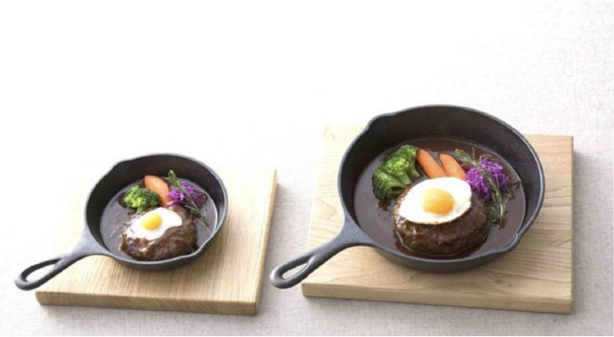

コドモがオトナに憧れて
オトナがコドモゴコロを思い出す
Concept
コドモがオトナに憧れて
オトナがコドモゴコロを思い出す
子どもだって、グラスで乾杯したい。
ソファにどかっと座りたい。
お父さんだって、思わずココロを躍らせるような
大きなプレートで、あれもこれも食べたい。
そんな思いを叶えられるファミリーレストランです。
Survice
家族での外食は、いつもの食事よりちょっとだけ特別な時間。
だからこそ、ご自宅での食事よりもリラックスして、
家族の会話を愉しんでいただきたいと考えています。
メニューのしつらえ、離乳食のご提供など、
ひとつひとつに心を込めて、お客様をお迎えして おります。
全てのメニューにハーフサイズを用意
お子さまの大人と同じものが食べたい!
という気持ちに応えるべく、
ほぼ全てのフードメニューには
フルサイズ、ハーフサイズの両方を用意しています。

離乳食の提供
シェフが毎朝丁寧にだしをとり、
季節の食材をつかった離乳食を無料で提供しています。
赤ちゃんの月齢に合わせて、
初期、中期、後期の３つの離乳食をご用意しています。
メニューの表紙が「ぬりえ」に
各テーブルに用意されている「ルルット」のメニューは、
表紙が「ぬりえ」になっています。
テーブルの上には色鉛筆の用意もされています。
お腹のすいている小さなお子さまにとっては、
待つのが難しいことも。この「ぬりえ」で
料理が運ばれてくる少しの時間、楽しんで欲しいです。

Access
Louloutte
〒530-0001大阪市北区梅田3-3-1
JR 大阪駅 桜橋口 徒歩3分
大阪メトロ 梅田駅 徒歩5分
大阪メトロ 梅田駅 徒歩5分
TEL：06-6347-0001